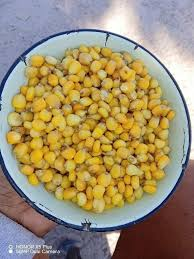
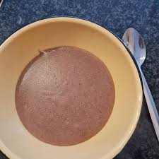
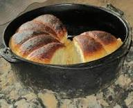

Welcome to Our Food Festival
At the Lesotho Cultural Heritage Festival, we celebrate not just our music and dance, but also our rich culinary heritage. Our traditional foods are prepared using age-old recipes passed down from generation to generation, using locally sourced ingredients from our mountain farms.
Each dish tells a story of Basotho resilience, creativity, and hospitality. From hearty porridges that sustain our people through cold winters to refreshing drinks that quench thirst after long days in the fields, our cuisine reflects our connection to the land and our community values.
Traditional Recipes

Qhubu
Traditional maize dish
Qhubu is the Sotho meal prepared by reming the kernels from the corn cob and salt is added for better taste, this dish is both filling and nutritious.
Ingredients:
- pot
- water
- salt
Preparation:
Bring water to boil, add maize in the pot the leave to cook until it is soft leave to cool as it is best served hot.
Cultural Significance:
Qhubu is traditionally served at important family gatherings and ceremonies. It represents unity and sustenance in Basotho culture.

Motoho
Fermented Sorghum Drink
Motoho is a traditional fermented beverage that's both refreshing and nutritious. This tangy drink is perfect for hot summer days and is packed with beneficial probiotics.
Ingredients:
- 1 cup sorghum flour
- 4 cups water
- 1 tablespoon sugar (optional)
- Starter culture from previous batch
Preparation:
Mix sorghum flour with water to form a smooth paste. Add starter culture and let ferment for 2-3 days in a warm place. Dilute with water and add sugar to taste before serving chilled.
Cultural Significance:
Motoho is traditionally served to welcome guests and is believed to have medicinal properties. It's a symbol of hospitality in Basotho homes.
.jpg)
Nyekoe
Sweet Pumpkin Porridge
Nyekoe is a sweet, creamy porridge made from locally grown pumpkins. This comforting dish is enjoyed as both breakfast and dessert, showcasing the natural sweetness of Lesotho's agricultural bounty.
Ingredients:
- 1 medium pumpkin, peeled and diced
- 2 cups maize meal
- 4 cups water
- 1 cup milk
- 2 tablespoons butter
- Cinnamon and nutmeg to taste
- Sugar to taste
Preparation:
Boil pumpkin until soft, then mash. Add water and bring to boil. Gradually add maize meal while stirring. Cook for 20 minutes, then add milk, butter, and spices. Sweeten to taste.
Cultural Significance:
Nyekoe is often prepared during harvest celebrations and is a favorite among children. It represents abundance and the sweetness of life.
.jpg)
Likhets'o
Traditional Pumpkin Dish
Likhets'o is a dish that is consumed that can be served as a side dish or desert.
Ingredients:
- sliced pumpkin (likhets'o)
- water
- salt
- pot
Preparation:
Pour the pumpkin in the pot and add water then add salt, and simmer for 10 minutes.
Cultural Significance:
Likhets'o represents the importance of fresh vegetables in the Basotho diet and is often the first dish taught to young girls learning to cook.

Maqebekoane
Traditional Bread Dish
Maqebekoane is a hearty bread dish that provides essential carbohydrate in the Basotho diet. This warming dish is perfect for cold mountain evenings and is packed with nutrition.
Ingredients:
- crated carrots(optional)
- sugar
- salt
- flour
- water
- yeast
- a dish with a lid
Preparation:
mix all the ingidients and leave overnight, then leave to raise and boil water to cook the dough it is best served hot.
Cultural Significance:
Maqebekoane is a symbol of sustenance and is traditionally served at important community gatherings and celebrations.
Cooking Demonstrations & Workshops
Join our traditional cooking workshops where master chefs and community elders will teach you the secrets of Basotho cuisine!
🍳 Daily Cooking Demonstrations
- 10:00 AM - Qhubu Making Workshop
- 12:00 PM - Motoho Fermentation Class
- 2:00 PM - Nyekoe Sweet Treats
- 4:00 PM - Likhets'o Vegetable Masterclass
👩🍳 Special Features
- Learn from community elders
- Take home recipe cards
- Taste samples of each dish
- Cooking competition finals on Day 3
Food Market & Stalls
Our festival food market features over 20 food stalls offering traditional Basotho cuisine and modern interpretations of classic dishes.
🏪 Traditional Food Stalls
- Grandmothers' Kitchen - Authentic recipes
- Mountain Harvest - Organic produce
- Basotho BBQ - Traditional grilling
- Sweet Treats - Desserts and beverages
🌱 Modern Fusion
- Contemporary Basotho Cuisine
- International Food Court
- Vegetarian and Vegan Options
- Kids' Favorite Corner
Nutritional Benefits
Traditional Basotho cuisine is not just delicious - it's incredibly nutritious! Our ancestors understood the importance of balanced nutrition long before modern science.
🌾 High in Fiber
Sorghum and maize-based dishes provide excellent dietary fiber, promoting digestive health and providing sustained energy.
🥬 Rich in Vitamins
Leafy greens like likhets'o provide essential vitamins A, C, and K, while pumpkin offers beta-carotene and antioxidants.
🫘 Plant-Based Protein
Bean dishes like maqebekoane offer high-quality plant protein, essential for muscle health and tissue repair.
🦠 Probiotic Benefits
Fermented drinks like motoho support gut health and boost the immune system with beneficial bacteria.
Cultural Food Etiquette
Understanding Basotho food customs enhances your dining experience and shows respect for our traditions.
🙏 Before Eating
- Wash hands thoroughly
- Wait for elders to start first
- Say grace if custom allows
- Use right hand for eating
🍽️ During Meals
- Eat slowly and mindfully
- Compliment the cook
- Share from communal dishes
- Accept second servings graciously
Take Home Recipes
Don't let the flavors of Lesotho stay at the festival! Purchase our recipe book collection featuring:
- Traditional Basotho Cookbook - M150
- Modern Fusion Recipes - M120
- Vegetarian Basotho Cuisine - M100
- Festival Favorites Collection - M180